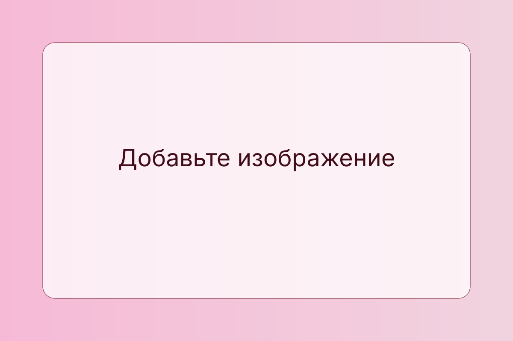

Посты в Т—Ж
С октября по декабрь я работала над серией контентных материалов для Т—Ж: от анонсов до образовательных и вовлекающих публикаций. В фокусе — сложные темы, которые важно объяснить понятно и интересно.

Редактор · Копирайтер · Креативные индустрии
Студентка 2 курса НИУ ВШЭ. Главный редактор «Кураторы Вышки». Работаю на стыке текстов, брендинга и коммуникационных форматов.
Учусь в НИУ ВШЭ на программе «Управление в креативных индустриях». Окончила школу с двумя медалями и красным аттестатом. Сейчас — главный редактор одного из самых масштабных студенческих сообществ НИУ ВШЭ «Кураторы Вышки». Хочу развиваться в издательской сфере: медиа, digital-редактура и контент-стратегии.
Благодаря обучению на программе я совмещаю базу кодинга, маркетинга и ведения нон-скриптед форматов.
С октября по декабрь я работала над серией контентных материалов для Т—Ж: от анонсов до образовательных и вовлекающих публикаций. В фокусе — сложные темы, которые важно объяснить понятно и интересно.
Работаю в сообществе с октября 2025, а с января 2026 — главный редактор. Веду редакционные серии, образовательные форматы, благодарственные посты, рассылки и PR-кампании отборов.
Карточки открываются в полноформатном просмотре.